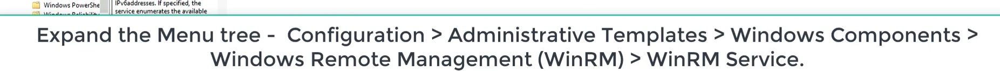
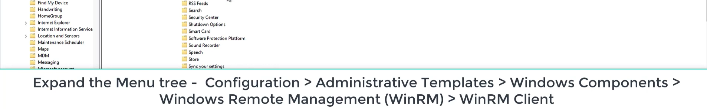

winrm
Configure Winrm: target via GUI
- start winrm service
- run => services.msc => windows remote management (Gestion à distance)
- run => gpedit.msc // open group policy editor

- enable winrm and set IP filters to *
open windows advance firewall and enable winrm incoming connection- windows remote management HTTP-in (Getsion à distance de windows mode entrée => activer la règle
create demouser (compmgmt.msc) and add it to Remote Managemnt users group
Configure WINRM target : Powershell
- Get-Service winrm
- Start-Service Winrm
- Set-WSManQuickConfig
- Starts the WinRM service.
- Sets the startup type on the WinRM service to Automatic.
- Creates a listener to accept requests on any IP address.
- Enables a firewall exception for WS-Management communications.
- Creates the simple and long name session endpoint configurations if needed.
- Enables all session configurations.
- Changes the security descriptor of all session configurations to allow remote access.
- 3. Create user
- $secureString = convertto-securestring "password_123321" -asplaintext -force
New-LocalUser "winrmdemo" -Password $secureString -FullName "WinRM Demo" -Description
"WinRM Demo Account"
Add-LocalGroupMember -Name 'Administrators' -Member 'winrmdemo'
Configure WINRM : attacking machine windows: GUI
- start winrm service
- enable trusted hosts and add "*” to teh list
Powershell- $cred=Get-cred
- Invoke-Command -ComputerName $target -ScriptBlock {Get-Process} -Crdential $cred
Configure WINRM client : Powershell
- start-service winrm
- Set-item wsman:localhost\client\trustedhosts -value *
- // set the trusted hosts to *